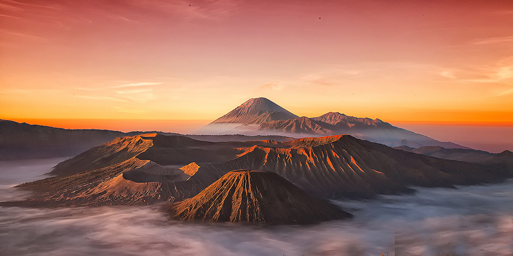

Gunung Bromo
Berdiri kokoh setinggi 2.329 meter di atas permukaan laut, Gunung Bromo menyimpan keindahan alam yang sayang untuk dilewatkan. Gunung berapi yang masih aktif ini secara administratif berada di empat wilayah kabupaten di Jawa Timur, antara lain Kabupaten Malang, Pasuruan, Lumajang dan Probolinggo. Hal ini memudahkan wisatawan untuk datang dari arah manapun. Gunung ini merupakan bagian dari Taman Nasional Bromo Tengger Semeru dan telah menjadi tempat wisata paling terkenal di provinsi Jawa Timur. Taman nasional seluas 800 km persegi ini melingkupi kawasan Gunung Bromo dan Gunung Semeru.
Gunung ini terkenal dengan pemandangan matahari terbitnya yang indah. Untuk bisa menyaksikan fenomena ini, para wisatawan harus naik ke Puncak Penanjakan yang merupakan lokasi terbaik untuk dapat melihat matahari terbit. Jika menginap di sebuah penginapan anda dapat berpesan kepada pemilik penginapan untuk dibangunkan di pagi, karena keesokan harinya sekitar jam 2 dini hari, anda akan dibangunkan untuk persiapan mendaki. Rasa lelah karena mendaki akan terbayar lunas dengan pemandangan matahari terbit yang luar biasa. Saat matahari perlahan merangkak naik, susasana akan sangat tenang dan hanya terdengar bunyi jepretan kamera wisatawan.
Gunung Bromo memiliki kawah dengan panjang diameter sekitar 800 meter dari utara ke selatan dan 600 meter dari barat ke timur. Dengan kandungan belerang yang ada di kawah, tak mengherankan jika bau belerang cukup tajam tercium saat anda berada berdiri di tepiannya. Untuk dapat menikmati keindahan kawah ini, anda harus menaiki 250 anak tangga terlebih dahulu. Jika ini terdengar melelahkan, tersedia kuda-kuda milik warga sekitar yang bisa anda sewa.
Suhu udara di Gunung Bromo berkisar antara 3-20 derajat Celcius, bahkan bisa mencapai suhu minus 0 derajat Celcius. Untuk itu, siapkan pakaian hangat, sarung tangan, syal dan penutup kepala. Jika anda lupa membawa perlengakapan tersebut, tak usah khawatir karena anda bisa menemukan pedagang di sekitar kawasan wisata Gunung Bromo.
Sejarah
Pada masa itu berdasarkan cerita sejarah dan legenda bahwasanya Gunung Bromo berasal dari nama Brahma yaitu Gunung yang dianggap Suci oleh masyarakat suku tengger. Kemudian orang jawa menyebutnya Gunung Bromo. Suku tengger adalah masyarakat asli yang berada di kawasan kaki gunung bromo semeru yang berasal dari penduduk pribumi kerajaan majapahit.
Pada zaman dahulu kala ketika kerajaan majapahit mengalami serangan dari berbagai daerah sehingga penduduk pribumi kerajaan majapahit melarikan diri untuk mencari tempat tinggal baru demi keselamatan hidup mereka dan pada akhirnya mereka terpisah menjadi 2 bagian yaitu pertama menuju kawasan gunung bromo dan yang kedua menuju Pulau Bali. Karena berasal dari lokasi yang sama sehingga ke 2 tempat ini sampai sekarang mempunyai kesamaan akan budaya, agama, adat istiadat yaitu menganut kepercayaan agama Hindu.
Masyarakat Suku Tengger yang ada di kawasan Gunung Bromo berasal dari Legenda Roro Anteng dan Joko Seger yang diyakini sebagai asal usul nama Tengger itu. “Teng” akhiran nama Roro An-”teng” dan “ger” akhiran nama dari Joko Se-”ger” dan Gunung Bromo sendiri dipercaya sebagai gunung suci. Mereka menyebutnya sebagai Gunung Brahma. orang Jawa kemudian menyebutnya Gunung Bromo. Itulah sejarah dan legenda terbentuknya gunung bromo purba.